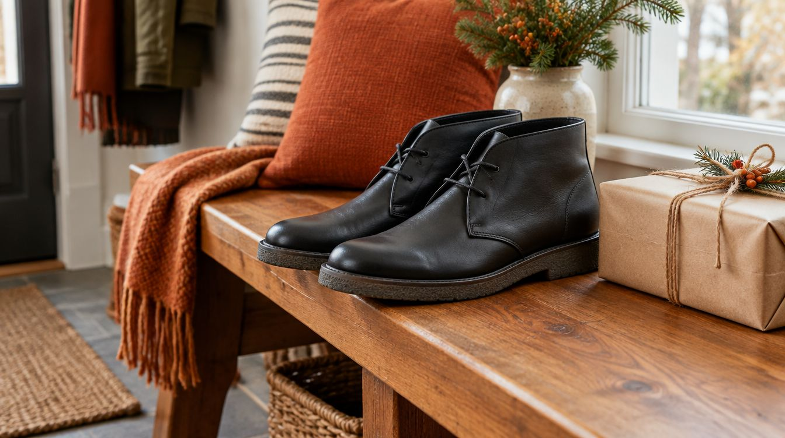
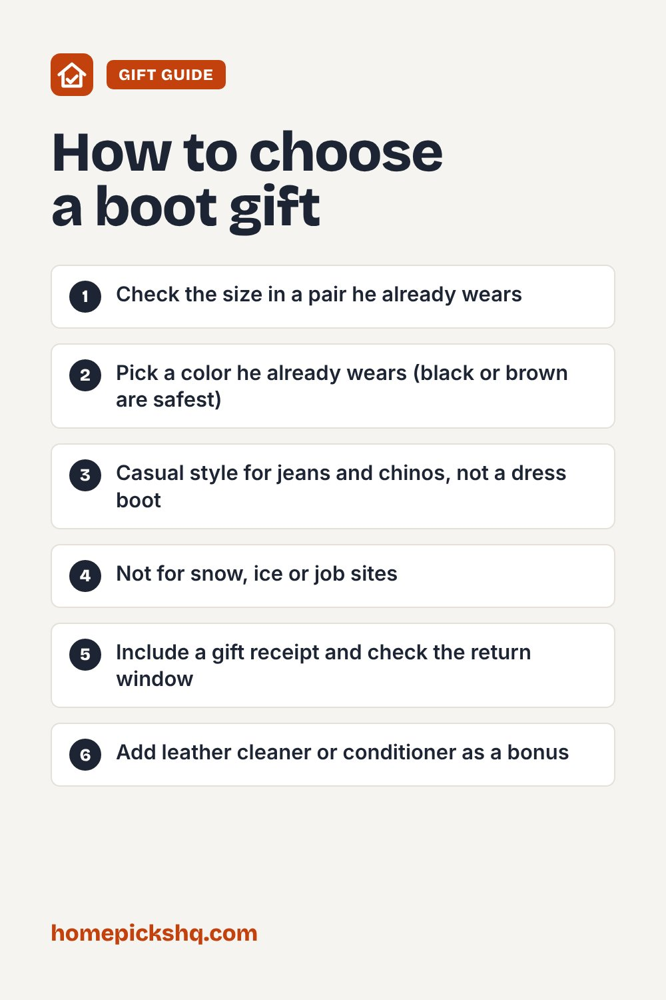

Clarks Shacre Boot: A Classic Leather Chukka Gift for Him

How we write these guides: we research manufacturer specifications, expert guidance, and owner feedback. We do not claim to have lab-tested every product. Links to Amazon on this page are affiliate links; see our disclosure.
Boots are one of the safest gifts for the man who says he does not need anything, as long as you get the style and size right. The Clarks Shacre is a leather chukka-style ankle boot inspired by the brand's well-known Wallabee, with a crepe-textured rubber wedge sole and extra heel cushioning. Here is what that means, who it suits, and how to avoid a sizing return. We have not tested these boots ourselves; details come from Clarks' product listing.
Clarks Collection Men's Shacre Boot, Ankle Boot (Black Leather)
| Style | Ankle-height chukka boot inspired by the Clarks Wallabee |
|---|---|
| Upper | 100% leather (beeswax leather on some colors) |
| Sole | Synthetic, crepe-textured rubber wedge |
| Comfort | Extreme Comfort heel cushioning |
| Shaft | Ankle height |
| Colors and sizes | Several colors and a full size range on Amazon |
Pros
- A classic, easy-to-wear shape that works with jeans and chinos
- Leather upper ages well with basic care
- Wedge sole is flat and stable for all-day walking
- Cushioned heel for comfort
- Known brand with a long history in this style
Cons
- Shoe size is personal, so a gift can need an exchange
- Crepe-style soles can feel slick on wet tile or ice
- Leather needs occasional cleaning and conditioning
- Casual style, not a dress boot
Check price on AmazonPrice and availability change often. As an Amazon Associate I earn from qualifying purchases.
Who it's for
This is a good fit for someone who wears casual leather shoes most days and likes a clean, classic look rather than a rugged work boot. It works for weekends, office-casual jobs and travel. If he needs waterproof boots for snow or a job site, pick an insulated work or hiking boot instead.
Getting the size right
Check the shoes he already wears. Look inside an existing pair for the size, and ideally one from Clarks. If he is between sizes, check the size chart on the Amazon page and recent buyer comments about fit. Include a gift receipt, and confirm the return window before you order.
How it compares to the Wallabee
The Shacre borrows the Wallabee's soft, casual look and wedge sole but in an ankle-boot profile. If he already likes Wallabees or desert boots, this is a safe next pair. If he prefers a more structured boot, a classic desert boot or a lace-up leather boot may suit him better.
Care tips
Brush off dirt after wear, use a leather cleaner and conditioner a few times a season, and let them dry naturally away from heaters if they get wet. A shoe tree helps them keep their shape.
Quick buying checklist
- Check the size in a pair he already wears
- Pick a color he already wears (black or brown are safest)
- Casual style for jeans and chinos, not a dress boot
- Not for snow, ice or job sites
- Include a gift receipt and check the return window
- Add leather cleaner or conditioner as a bonus
Check price on AmazonUse the checklist above to compare options. As an Amazon Associate I earn from qualifying purchases.

Frequently asked questions
Are these waterproof?
The listing does not describe them as waterproof. Treat them as everyday leather boots and avoid heavy rain or snow.
Do Clarks boots run true to size?
Fit varies by style and person. Check the size chart and recent comments on the Amazon page, and compare with a pair he already owns.
Is the Shacre the same as the Wallabee?
No. It is inspired by the Wallabee's look and sole, but it is its own ankle-boot design.